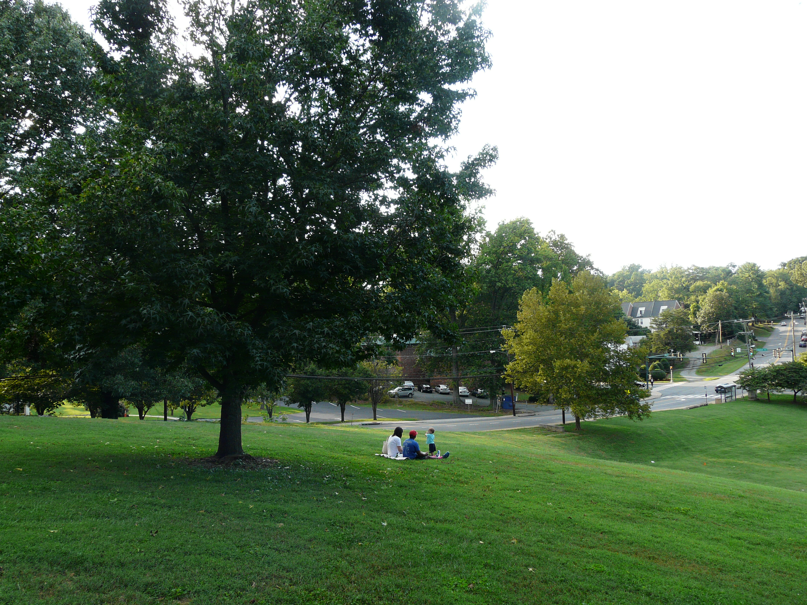

Nothing says “I love you” more sweetly than treating your special someone to a delicious picnic in a beautiful setting. But don’t let the mere geography of a place determine your view. Create the memorable beauty of an intimate setting by working with the topography in which you both nestle down with simple fare and a crisp bottle of your favorite beverage.
Washington Park in Charlottesville is a great example of a site you can enhance simple and elegantly. Although at first glance the site looks like an oversized yard next to a swimming pool, this setting has so much to offer. Start by picking a majestic tree and naming it “our tree.” Lay down a traditional blanket on which you place the perfect picnic basket. Offer to lay out the “table” for your lover and treat them to some delicacies from nearby local favorites, such as MariBette or Timbercreek Market.
As you recline and enjoy the views below, read a few lines of poetry from local writer XXXXX. If you are feeling playful, bring along a frisbee for a few spectacular slices down the hill. However you decide to enjoy your time together, a good long repose under the trees as you wind down will help you and your SO create a day you will long remember.
Recommended Meetups: Charlottesville Foodies
Recommended Websites and Blogs: Booker T. Washington Park